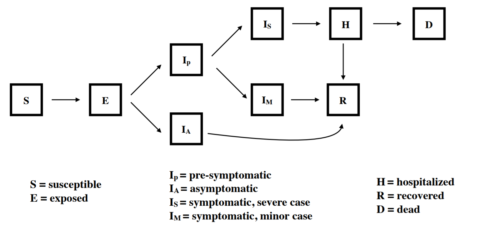

A potential vaccine may take 12-18 months to be developed. What can we do to keep COVID-19 under control until then? We have developed a compartmental model of COVID-19 to evaluate possible outcomes of non-pharmaceutical interventions such as social distancing.
Take a look at our intro below, or skip directly to our complete model or an overview of model details.
By now, you've probably already seen a diagram like this. One of the most important steps we can all take right now is practicing social distancing. By cutting down on the number of people we interact with, we can slow down the spread of COVID-19. Here's a hypothetical scenario where a COVID-19 outbreak begins on Jan 15, and spreads for 50 days before we begin social distancing. We run 20 simulations and show the median value for each day.
Many of our health resources have a fixed capacity. If we have too many cases at a time, we simply won't be able to take care of everyone who gets sick. Hospitalizations above our limit will mean making hard decisions about which patients to prioritize (for example, Santa Clara County has roughly 4500 hospital beds). Some people may not be able to receive care. We are already seeing this scenario play out in places like Italy. The more social distancing we practice, the flatter the curve will be.
Flattening the curve isn't the only benefit of social distancing. While some of our health resources have fixed limits, others will become more available over time. We will be able to produce more resources like treatments, ventilators and hospital beds (though exactly how many we can produce is unclear. One possible scenario is pictured below). Practices like social distancing can help delay the time until the number of cases peaks. Social distancing buys us time so that we can make sure we have the resources we need by then.
In places like South Korea and China, it seems like they've already gotten to the tail end of the curve. If we all stay inside for a couple of weeks, we can stop doing all of this social distancing stuff once cases start to drop, right? Not quite.
If we lift controls too quickly, we could see a resurgence, where cases pick back up quickly. In fact, if we completely stop practicing social distancing at almost any point in this model, we risk an epidemic that overwhelms hospital capacity.
We will probably have to stay careful for a long time after it seems like COVID-19 is gone in order to keep it under control, or until a vaccine is developed (which could take twelve to eighteen months). That doesn't mean we will necessarily need to stay in our houses the whole time, though.
Experts have shown that we can keep transmission relatively low and avoid overwhelming our healthcare capacity if we use a "lightswitch" approach. When we're on, we go back to social distancing and cases start to decrease. When we turn it off we can back off on social distancing and make smaller adjustments. Cases will start to increase a bit, but won't be able to grow out of control before we switch the social distancing back on. We can make our switches a certain amount of time (three weeks on, three weeks off) or a certain threshold based on data (for example: on when we pass 15 hospitalized cases in a week, off when we are below 2 hospitalized cases in a week).
This way, we can balance stopping the spread of COVID-19 and going about our normal lives.
We know this is an incredibly stressful and scary time for people around the world. There's a lot of uncertainty, but scientists, medical professionals, and leaders across industries are working together to help us find solutions. If we make decisions based on the best models we have, we can get through this crisis while protecting the most vulnerable and minimizing the impact on our lives and the economy.
If you'd like, you can play around with our model more here. Test how interventions change based on start date and adding in quarantining of symptomatic people.
We develop a compartmental model of COVID-19 to evaluate control efforts through non-pharmaceutical interventions. Currently, with this model we are aiming to illustrate possible trajectories under different hypothetical scenarios rather than trying to match exact dynamics of a location. We have turned the model into an interactive app to allow viewers to choose interventions over different time periods to consider the impact of the onset and duration of those interventions as well as the potential for resurgence after control measures are lifted.
Our model explicitly tracks nine compartments, including exposed, asymptomatic, presymptomatic, symptomatic, hospitalized, and recovered. We assume that all individuals who are exposed go through an incubation period. A portion of those who then become infectious remain asymptomatic for the entire infection (Ia) while individuals who go on to become symptomatic first go through a pre-symptomatic but infectious state (Ip). Those who show symptoms are further divided between those with mild symptoms (Im) and severe symptoms (Is) who require hospitalization. We assume that after admission to the hospital, no onward transmission occurs. The model is implemented in R with the package “pomp” using a stochastic simulator where the movements between compartments are multinomially distributed based on transition rates.
Crucially, our modeling framework allows for different types, intensities, and durations of interventions to be implemented, and thereby illustrates how these interventions impact dynamics and resultant number of COVID-19 cases and fatalities through time. We currently consider 3 possible interventions that are can be implemented at different times during the simulation:
In the future, we are considering additional interventions and scenarios including contact tracing with efficacy dependent on the testing capacity, fatality and hospitalization rates dependent on the age structure of a population, and fatality rates further dependent on hospital capacities.
All code for the model is available on Github: https://github.com/morgankain/COVID_interventions.